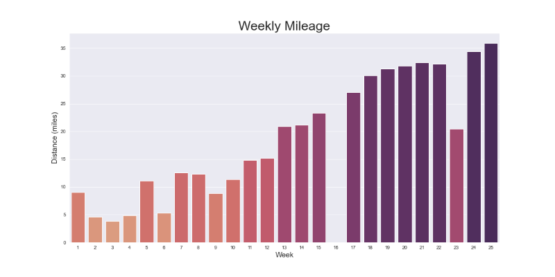

Half-Marathon Training Plan
Nicholas Scott
INFO-664-01
Programming for Cultural Heritage
Fall 2021
Introduction
For the past 5 years, I’ve had what many couples therapists would call a tumultuous relationship with running. As an avid cyclist of many years, my attempts at adopting a significantly higher-impact hobby have been marred with joint pain, muscle soreness, overuse injuries, and tendonitis, which always put an abrupt end to my running aspirations.
However, in the summer of 2020, I decided I would try a new approach: a gradual, long-term initiation into the sport of running. One that would allow my body - joints, tendons and all - to adapt to the relentless impact of running over the course of many weeks and months, rather than jumping straight into long miles and fast paces (as I’d done in the past). This time, I committed myself to slowly incorporating running into my routine, and increasing my training load as each week progressed.
The charts and graphs below document the slow, diligent build-up from running fewer than 10 miles per week, to running half-marathon distances over the course of six months. I have visualized my gradual increase in weekly volume (aka, “mileage”), my improvements in cadence (or “steps-per-minute”), and even developed a metric to track changes in overall fitness over time. My hope is that this training log will serve as a reminder that staying injury-free in the sport of running is not a guarantee. Instead, it is the product of careful planning, data tracking, and the willingness to invest in long-term health and success.
Volume

There are several training “rules” that get thrown around in running circles. Many reflect an outdated understanding of exercise physiology and nutrition, but some have stood the test of time as reliable guidelines for staying safe and getting faster. One of the most common rules that comes up in running forums and coaching resources is the “10% rule”. The 10% rule states that you should not increase your weekly mileage by more than 10% from week-to-week. While susceptibility to injury will vary from person to person, the 10% rule is a tried-and-true way to allow your body to adjust to the impact of running slowly and reduce the chances of developing an overuse injury.
I’ve struggled with this in the past, as I have always been one to do too much, too soon. I genuinely enjoy being outside and exercising, so I have been extremely prone to increase my volume far too quickly in the past. This approach has resulted in consistent injuries, and subsequently frustration from having to take more time off to recover and heal. As the chart above will show, I was able to reign in my enthusiasm over the last six months, and be patient with increasing my weekly mileage. Clearly, this strategy has paid dividends.
Cadence

Cadence is a concept that most beginner runners will not think about until they are on the couch with an ice pack on their foot or knee and typing in their symptoms on Google or YouTube. Cadence is a measure of how many steps you take in a minute, and it turns out, it’s an extremely important think to pay attention to. Studies have shown that experienced runners take an average of 180 steps per minute – significantly more than most beginner runners. While it may seem obvious that an experienced runner would take more steps per minute than a beginner, you might be surprised to learn that this holds true even when they are running at the same pace as a beginner.
Running at a higher cadence is consistently correlated with lower injury risk. The thinking is that a higher cadence equates to less impact, as your foot is on the ground for a smaller amount of time. For this reason, I made a concerted effort to focus on increasing my cadence over the past six months. As you can see in the chart, my average weekly cadence has improved quite a bit – going from the low 150s to the upper 160s. I’ve still got a long way to go before reaching the gold-standard of 180, but I can already tell that the quicker turnover is helping my efficiency and reducing pain and injury.
Fitness
Many activity tracking apps attempt to approximate the ever-elusive concept of “fitness”. Fitness is an idea that can be difficult to measure, and the methods for observing it depend heavily on how it’s being defined. For the purposes of this project, I thought it would be a fun exercise to try and develop a metric for this myself. Shown above is what I have aptly named, the “fitness index” score. The fitness index score is intended to be a measurement of efficiency – ie, the resources required to produce an output.
The score is calculated using the following formula: (weekly average speed/weekly average heartrate)
As fitness increases, there are a few things you might observe. If your average heartrate remains constant, then your speed should increase. If your speed remains constant, you should see your average heartrate decrease. In both of these cases, an increase in fitness results in fewer required resources (measured in heartbeats per minute) and/or an increase in output (measured in speed). In other words, an increase in efficiency should result in a higher fitness index score and a decrease in fitness should result in a lower score.
Of course, this is a very simplistic way of measuring a very complicated concept. There are many things that can affect one’s heartrate and speed that are not related to fitness. For example, running uphill typically makes your heartrate increase and your speed decrease, but running uphill is certainly not reducing your overall fitness. Similarly, running in extreme heat can affect both heartrate and speed, but is not impacting your fitness the way this calculation might imply. To account for these confounding variables, I chose to measure the fitness index as a weekly average, rather than a daily value. This way, the skewing effect of something like a particularly hilly route or an extremely hot (or cold) day can be balanced with several other activities for the week.
Whether you call it fitness, efficiency, “running economy”, etc., I was pleased to see that it improved over the past six months. What is especially interesting to me, as someone who has been a regular participant in endurance sports for roughly a decade, is that you can clearly see that it was not a perfectly linear path from start to finish. Some weeks you feel great and some weeks you feel terrible, and there is often no explanation for it. Most runners understand this natural ebb-and-flow, but it’s interesting to see it visualized over time. The chart re-affirms my longstanding philosophy that the daily variations in pace, effort, and efficiency should always be placed in the context of the larger picture.
Methodology
The data for this project was generated with the Strava fitness app, and retrieved using their API. All of the charts were made with python. The code for the entire project can be found on github. Thank you for reading, and happy running.